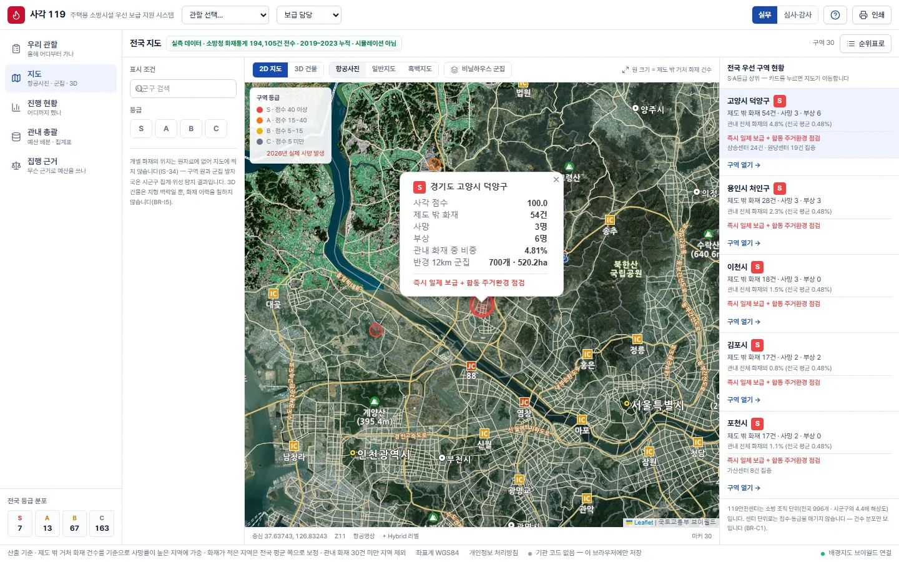
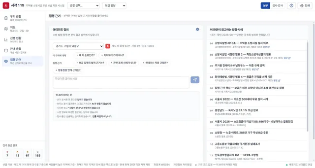
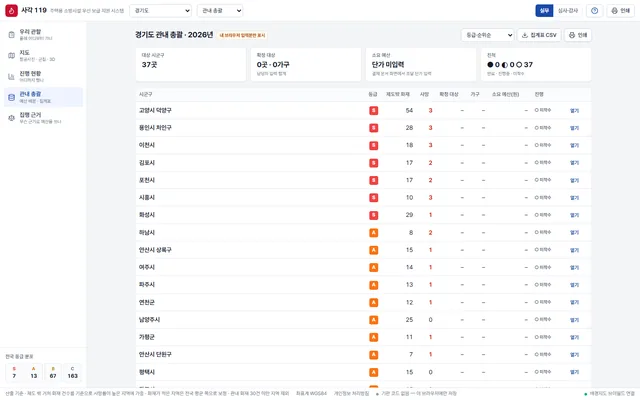
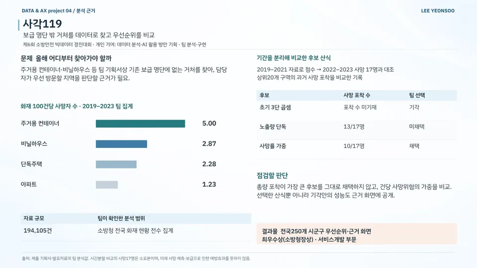
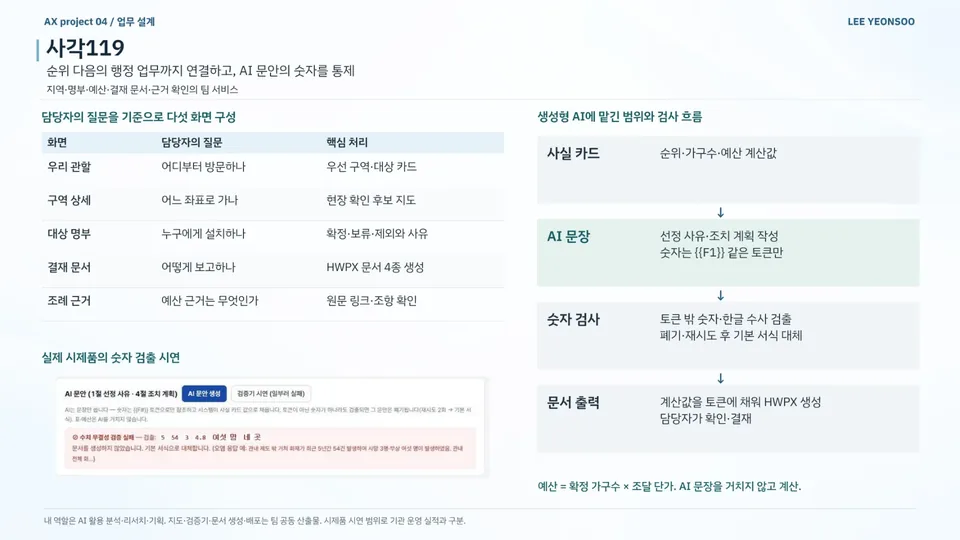
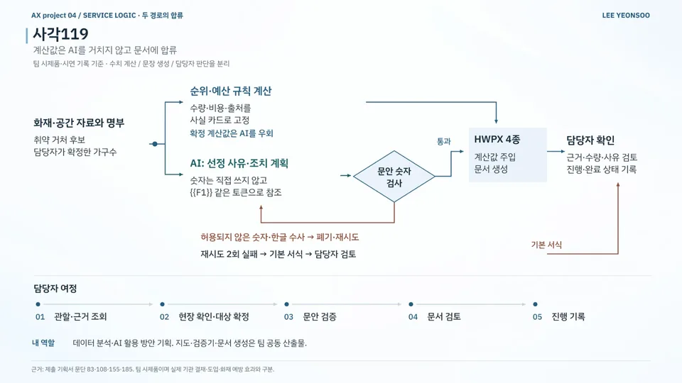

데이터 분석 / AI 서비스 기획 / 공공·정책 / 소방·안전
사각119
Sagak119 — From Fire-Risk Priority to Administrative Workflow
화재 취약 거처의 방문 우선순위와 행정 문서 작성 흐름을 설계한 팀 시제품
현재 상태팀 시제품 시연 · 기관 도입 전
- 기간
- 2026 (입상작 발표 2026.09.11 · 시상 2026.09.14)
- 팀
- 팀 119insight (3인)
- 내 역할
- 데이터 분석 · AI 활용 방안 기획
- 도구
- 수상
- 최우수 최우수상 · 소방청장상
제6회 소방안전 빅데이터 활용 및 아이디어 경진대회 (서비스개발 부문)
내 기여AI를 활용한 데이터 분석·리서치와 분석 결과의 행정 업무 활용 방안 기획에 참여했습니다. 지도·검증기·문서 생성과 배포는 팀 산출물입니다.
사진·화면


크게 보기
크게 보기집행 근거 에이전트: 구역을 고르고 묻으면 참고 법령·사례 범위 안에서만 답변출처팀 자료 
크게 보기관내 총괄: 경기도 시군구별 등급·사망·예산 집계표출처sagak119.vercel.app/summary (새 창)


발표 자료

크게 보기포트폴리오 슬라이드 11쪽 · 본문 내용을 한 장으로 정리한 슬라이드 
크게 보기포트폴리오 슬라이드 12쪽 · 본문 내용을 한 장으로 정리한 슬라이드 
크게 보기포트폴리오 슬라이드 13쪽 · 본문 내용을 한 장으로 정리한 슬라이드


문제
담당자에게는 기존 보급 명단에 없는 거처(주거용 컨테이너·비닐하우스 등) 중 올해 어디부터 방문할지 정할 근거가 필요했습니다. 취약지역 분석도 실제 점검과 명부·예산·결재 문서로 이어지지 않았습니다.
접근
- 소방청 전국 화재 현황 194,105건을 전수 집계해 거처 유형별 화재 100건당 사망자 비교
- 2019–2021 자료로 산출한 점수를 2022–2023 사망 17명과 비교해 상위 20개 구역의 포착 수 평가
- 관할·구역 상세·대상 명부·결재 문서·조례 근거의 5개 화면 구성
- 계산값은 사실 카드로 고정하고 AI 문장은 {{F1}} 같은 토큰만 참조하도록 설계
- 확정 가구 수 × 조달 단가로 예산 계산, AI 문장 생성과 분리
핵심 판단
노출량 단독 산식(13/17명)과 비교해 건당 사망위험 가중 산식(10/17명) 채택, 두 성능 모두 공개
초기 3단 곱셈 산식은 기각
토큰 밖 숫자·한글 수사는 폐기·재시도, 2회 실패 시 기본 서식으로 대체해 담당자 검토
결과
- 화재 현황 전수 집계194,105건소방청 전국 화재 현황
- 우선순위 단위250개 시군구우선순위·근거 화면
- 화재 100건당 사망자5.00 vs 1.23주거용 컨테이너 vs 아파트 · 2019–2023
- 전국 250개 시군구 우선순위·근거 화면을 갖춘 팀 웹 시제품
- 현장 확인·명부 작성·문안 검증·HWPX 결재 문서 4종·진행 기록의 업무 흐름 시연
- 화재 100건당 사망자(2019–2023): 주거용 컨테이너 5.00 · 비닐하우스 2.87 · 단독주택 2.28 · 아파트 1.23
- 서비스개발 부문 최우수상 · 소방청장상
AI 활용
생성형 AI는 선정 사유·조치 계획 문장만 쓰고, 숫자는 토큰으로만 참조합니다. 순위·가구수·예산 계산값은 AI를 거치지 않고 문서에 바로 들어갑니다.
한계와 다음 단계
기간 분리 비교의 사망 표본은 17명으로 작고, 미래 사망이나 보급의 예방 효과를 추정한 결과가 아닙니다. 기관 결재·도입 전 시제품으로, 시연 페이지는 팀원이 배포했고 코드는 비공개입니다.